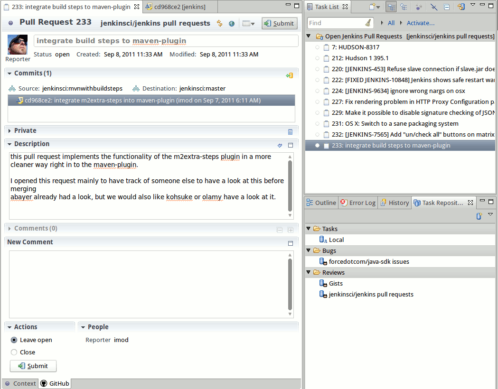

| GitHub Mylyn Connector |

|
|

|
| New Actions |
|
Updating This Document |
GitHub Mylyn Connector
Pull Request Support
- Pull Requests can now be added as a Mylyn Task Repository type
- The Pull Request task editor displays the commits and supports opening commits in the EGit commit viewer

Import and Clone
- Projects can now be cloned using the new
Import > Git > Repositories from GitHub wizard
- Projects cloned will appear in the
Git Repositories view once the clone has completed

GitHub Java API
- The GitHub Java API now supports the entire
GitHub v3 API
- The README is available
here
- Rendered version available
here
|
|

|
|
| New Actions |
|
Updating This Document |